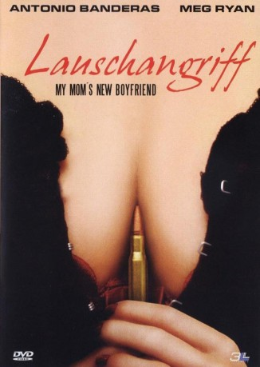

#6885 Lauschangriff - My Mom's New Boyfriend
Alternativ: My Mom's New Boyfriend
 
 IMDB-Wertung: 5.3 / 10
IMDB-Wertung: 5.3 / 10  Metascore: 0
Metascore: 0 
FBI Agent Henry Durand hat ein Problem. Es scheint, als wollte seine Mutter Marty es noch mal so richtig krachen lassen. Hilflos muss er mit ansehen, wie sie mit einem jungen Burschen um die Häuser zieht oder sogar im Bett landet. Doch mit dem Auftauchen von Tommy, scheint Besserung in Sicht. Leider gibt es einen Haken, denn Henry erkennt auf einem Fahndungsfoto den neuen Liebhaber seiner Mutter wieder. Tommy ist ein gesuchter Kunstdieb. Zu allem Überfluss bekommt Henry den Auftrag, das verliebte Pärchen zu beschatten – auch dort, wo er beide nicht beschatten möchte.
Jahr: 2008
Dauer: 96 Minuten
FSK: 12
Land: Deutschland Studio: 3L FilmverleihTonspuren:
Untertitel: Englisch,
Auflösung: 1080p (1920x800) Größe: 8110 MB
Genre: Thriller, Komödie, Krimi, Liebe
Regisseur: George Gallo
Drehbuch: George Gallo
Soundtrack:
Darsteller:
 Antonio Banderas als Tommy Lucero / Martinez
Antonio Banderas als Tommy Lucero / Martinez Meg Ryan als Martha Durand
Meg Ryan als Martha Durand Colin Hanks als Henry Durand
Colin Hanks als Henry Durand Selma Blair als Emily Lott
Selma Blair als Emily Lott Trevor Morgan als Eddie
Trevor Morgan als Eddie- Eli Danker als Jean Yves Tatao
 Keith David als FBI Chief Conrad
Keith David als FBI Chief Conrad Enrico Colantoni als Enrico the Chef
Enrico Colantoni als Enrico the Chef Marco St. John als Inspector Laborde
Marco St. John als Inspector Laborde- Aki Avni als Agent Randle
- Tarri Markel als Agent Cisneros
 Gary Grubbs als Police Chief Malone
Gary Grubbs als Police Chief Malone- Julie Lott als Albanian Belly Dancer
- Paul Sampson als Paul Canales
- Johnny Martin als Museum Security Guard #2
- Heidi Jo Markel als Forensic Lab Technician
- Keith Pratt als Floral Delivery Man
- Dan Braverman als Albanian Chef , uncredited
 Dodie Brown als Jazz Club Patron , uncredited
Dodie Brown als Jazz Club Patron , uncredited- John F. Daniel als Albanian Restaurant Patron , uncredited
 Ted Ferguson als FBI Forsenics Agent , uncredited
Ted Ferguson als FBI Forsenics Agent , uncredited- Rodney Hill Jr. als Waiter , uncredited
 Deborah R. Jones als Airport Passenger , uncredited
Deborah R. Jones als Airport Passenger , uncredited- Richard F Law als Lead S.W.A.T Man , uncredited
- Jessica Ameelah McDaniel als Jazz Club Patron , uncredited
- Trey Merrill als Drug Dealer , uncredited
- Terry Milam als Jazz Club Patron , uncredited
- Steven Miramontz als Waiter , uncredited
- Brooke Newton als Meg Ryan Flashback , uncredited
- Erika Perez als Coffee Stand Attendant , uncredited
- Breon Pugh als Jazz Patron , uncredited
- Cynthia Riser als Lady at Deli Counter , uncredited
- Kwane Spinks als FBI Special Agent , uncredited
 Bill Stinchcomb als Officer Jerry , uncredited
Bill Stinchcomb als Officer Jerry , uncredited- Brent Weisner als Police Officer , uncredited
- John Valdetero als Agent Fedler
- Tom Adams als Niko Evangelatos
- Mark Meade als Special Agent Wagner
- Jeff Fried als Agent Simpson
- Rocco Savastano als Albanian Chef Victor
- Jake Hjorten als Museum Security Guard #1
- Sarah Long als Forensic Technician
- Joey Gironda als Museum Guard #3
- Edrick Browne als Hotel Concierge
- Steve Picerni als FBI Agent
- Thomas Joseph Adams als Salvatore , uncredited
- Danny 'Dano' Anderson als Police Officer , uncredited
- Austin Barton als Restaurant Patron , uncredited
- Barry Barton als Museum Guard , uncredited
- Dale Beasley als Restaurant Patron , uncredited
Datei: X:\2008(G-M)\Lauschangriff - My Mom's New Boyfriend (2008, FSK12, 1920x800).mkv seit 06.09.2017
Festplatte: HD 2008(G-Z)-2009(A-F)
 Es gibt insgesamt 73 Filme in der Gruppe '2008(G-M)'
Es gibt insgesamt 73 Filme in der Gruppe '2008(G-M)'